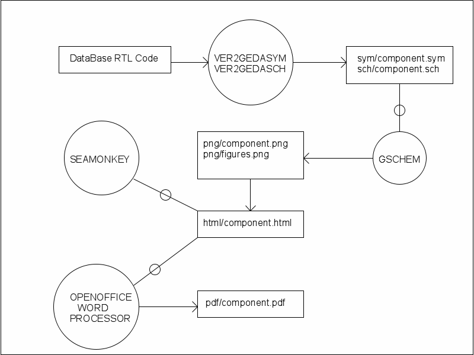

SOCGEN Project
Documentation Guidelines
Every component must include a minimum set of documents. This
consists of a ./doc directory that contains a html file named
"index.html". This file is the link that all external users will
use to access each components documents. Those documents consist
of:
- A Socgen datasheet for the component and each of it's variants
- Application notes detailing how to use the component.
- Any 3rd party produced reference material needed to support the
component
- Test plans detailing how the component rtl was simulated and what
was tested.
- Test plans detailing how to synthesis the component and prove
functionality in silicon.
All documentation source will be stored as html files. A pdf will be
extractred from each source and also included.
Tool support for documentation creation
The Socgen project uses and supports three opensourced tools for
creating and maintaining component documentation. The key to accurate
and timely documents is to automate their creation as part of the IP
build process.
SEAMONKEY
Seamonkey composer is the main tool used to edit the html files.
GSCHEM
Geda and friends are used to create any and all graphics used in the
html files. Several support tools are provided that can extract
schematic and symbol information directly from the database ensuring
that the database and documents stay in sync
OPENOFFICE WORD PROCESSOR
Is used to create the pdf for each component
